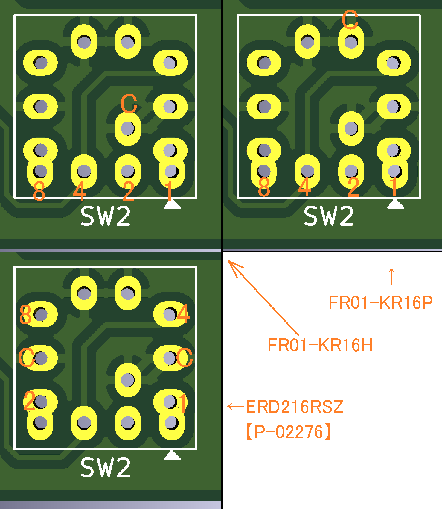

HUYE氏が中心になって開発している
USBコントローラ→ATARI変換機の改変版です。
プログラムバージョン3.60以降を使用した場合、追加された回路を自動で認識・利用します。
USB host shieldの空き端子を利用した基板を試作していたところ、
HUYE氏からお声がけいただき、氏のご厚意により現在の形に至っています。ありがとうございます。
まず、お手持ちのUSBコントローラが上記webサイトの対応リスト、またはプログラム内部に記述されているかを確認してください。
記載がない場合、Wiresharkなどを使って利用者ご自身でUSBコントローラの挙動を推測し、プログラムを書き換えていただく必要があります。
ご自身で試行錯誤された上で、対応を強く望まれる場合は、HUYE氏へ相談していただければ進展があるかもしれません。
HUYE氏の所有していないUSBコントローラである場合は、実機の貸し出しや往復輸送費の負担などのご協力をしていただくことになります。
ただし、ご協力をいただいても、対応作業はHUYE氏の義務ではありませんので、ご希望が叶わない場合もあります。
これらを理解できない方は連絡をご遠慮ください。
作者それぞれが趣味の成果をお裾分けしているだけであって、義務の類は存在しないということを理解していただきたくお願いします。
誰の作品であるかに関係なく、
実装密度や連結コネクタの数が増えているのも相まって、控えめに言っても初心者向けではありません。

私の改変版は変換モード切替操作を直感的にする事を目的としています。
白窓君を本来の用途以外で利用しています。
白窓君についてはTNB製作所さんのページを確認してください。
白窓君の完成品はTNB製作所さんの頒布ページにて購入できます。
| 部品配置 | 部品名 | 秋月電子の通販コード | 解説 |
|---|---|---|---|
| - | 専用基板 | - | BOOTHにて頒布していました。

|
| - | Arduino UNO | M-07385 または M-15574 | |
| - | USB host shield 2.0 for Arduino UNO (以下UHS2と略) |
- | 原作者のページはこちら 2.0以外、例えば1.2やminiを選んでしまうと大改造が必要なので注意。 |
| J1 | 2階建ての D-sub 9ピン(DE-9)レセプタクル | C-02870 | |
| - | Arduino用6ピン連結コネクタ | C-04045 | 2個必要 |
| - | Arduino用8ピン連結コネクタ | C-04046 | 2個必要 |
| - | M3ネジ穴に適合する11.2mm前後のプラ製スペーサー | - | UHS2のUSBコネクタとの短絡を防ぐための支え棒として2組以上を使用します。 導電性のネジ/ナットを使ってはいけません。 一部部品セットとして頒布した際には【P-03002】の長さを13mmに切ったものと【P-03584】を組み合わせていますが、 絶縁性材料であれば、この組み合わせ以外でも問題ありません。 |
| - | 粘着式の絶縁シートまたは絶縁テープ | - | 上記J1の端子部分がUHS2のUSBコネクタ近傍に露出しており、短絡事故を防ぐために必要です。 覆う範囲は基板裏面に印刷してあります。 |
| 部品配置 | 部品名 | 秋月電子の通販コード | 解説 |
|---|---|---|---|
| LED1 | 2012(0805)サイズの面実装LED | I-06419 | |
| R1 | 2012(0805)サイズの680～750Ω程度の面実装抵抗 | - | 秋月電子では当該サイズの扱いがありません。 千石電商や共立電子、マルツなどで調達してください。 |
| 部品配置 | 部品名 | 秋月電子の通販コード | 解説 |
|---|---|---|---|
| GPIN | Arduino用8ピン連結コネクタ | C-04046 | |
| - | UHS2側のGPINソケット | C-05779 | 8ピン分だけ切って使います。 UHS2にソケットを実装していない場合に必要です。 |
| SW1およびSW2 | ECE製 ERD216RSZ | P-02276 | 正論理(リアルコード)のロータリーDIPスイッチです。16ポジションのものを使用してください。 指定品が入手困難な場合は、NKKスイッチズの FR01-KR16P / FR01-KR16H のいずれかで代用できます。 どのスイッチを使う場合にも、実装方向と半田付け時のスイッチ位置に注意してください。  |
| 部品配置 | 部品名 | 秋月電子の通販コード | 解説 |
|---|---|---|---|
| GPOUT | Arduino用8ピン連結コネクタ | C-04046 | |
| - | UHS2側のGPOUTソケット | C-05779 | 8ピン分だけ切って使います。 UHS2にソケットを実装していない場合に必要です。 |
| C1 | 耐圧16V以上、2012(0805)サイズで 0.1uF の面実装セラミックコンデンサ | P-00093 | |
| C2 | 耐圧16V以上で47～100uFの電解コンデンサ | - | 通常は必要ありません。 白窓君の表示や輝度が不安定な場合に実装してください。 |
| F1 | リセッタブルヒューズ | P-12631 | |
| J2 | スルーホール垂直取り付けタイプのD-sub 9ピン(DE-9)プラグ | - | アンフェノール LD09P24A4GV00LFなど。 半田付けタイプのボードロックが必須です。 ソルダカップ端子のコネクタは使用できないので注意してください。 なお、ジョイパッドのケーブルで使われる事が多い総プラスチック製のコネクタですが、 D-sub 9ピンと称しつつ形状が微妙に違うため、そのまま挿すと角が削れてしまう問題があります。 予防するためには受け側(J2側)の金属枠をラジオペンチ等で矯正してください。 |
| U1 | 東芝製 TC74VHCT541AF | - | 代替品は存在しません。 必ずSOP20(ピン間隔1.27mm)の方を購入してください。 |
| - | 白窓君 | - | TNB製作所さんから購入してください。 |
| 部品配置 | 部品名 | 解説 |
|---|---|---|
| SW3 | リセットスイッチ | 同じ機能のスイッチがArduino UNOとUHS2のそれぞれに実装されています。 |
| JP1 | - | X680x0を破損する危険があるため、部品を実装してはいけません。 |

| 部品配置 | 部品名 | 秋月電子の通販コード | 解説 |
|---|---|---|---|
| - | 専用基板 | - | BOOTHにて頒布していました。 |
| - | Arduino UNO | M-07385 または M-15574 | |
| - | USB host shield 2.0 for Arduino UNO (以下UHS2と略) |
- | 原作者のページはこちら 2.0以外、例えば1.2やminiを選んでしまうと大改造が必要なので注意。 |
| J1 | 2階建ての D-sub 9ピン(DE-9)レセプタクル | C-02870 | |
| - | Arduino用6ピン連結コネクタ | C-04045 | 2個必要 |
| - | Arduino用8ピン連結コネクタ | C-04046 | 2個必要 |
| - | M3ネジ穴に適合する11.2mm前後のプラ製スペーサー | - | UHS2のUSBコネクタとの短絡を防ぐための支え棒として2組以上を使用します。 導電性のネジ/ナットを使ってはいけません。 |
| - | 粘着式の絶縁シートまたは絶縁テープ | - | 上記J1の端子部分がUHS2のUSBコネクタ近傍に露出しており、短絡事故を防ぐために必要です。 覆う範囲は基板裏面に印刷してあります。 |
| 部品配置 | 部品名 | 秋月電子の通販コード | 解説 |
|---|---|---|---|
| LED1 | お好みのLED | I-01318 | 大電流のものを選ぶとUHS2の動作に影響が出るので、安価な標準的な物を選んでください。 |
| R1 | 上記LEDに合わせた1/4Wの抵抗 | R-25681 | 赤色LEDであれば680Ω付近が妥当かと思いますが、正しい値はLEDのデータシートから算出してください。 屋内で使うものですから、定格目一杯でギンギンに光らせるものでもないでしょう。 |
| 部品配置 | 部品名 | 秋月電子の通販コード | 解説 |
|---|---|---|---|
| GPOUT | Arduino用8ピン連結コネクタ | C-04046 | |
| - | UHS2側のGPOUTソケット | C-05779 | 8ピン分だけ切って使います。 UHS2にソケットを実装していない場合に必要です。 |
| C1 | 耐圧16V以上で 0.1uF のセラミックコンデンサ | P-04064 | |
| C2 | 耐圧16V以上で47～100uFの電解コンデンサ | - | 通常は必要ありません。 白窓君の表示や輝度が不安定な場合に実装してください。 |
| F1 | リセッタブルヒューズ | P-12631 | |
| J2 | スルーホール垂直取り付けタイプのD-sub 9ピン(DE-9)プラグ | - | アンフェノール LD09P24A4GV00LFなど。 半田付けタイプのボードロックが必須です。 ソルダカップ端子のコネクタは使用できないので注意してください。 なお、ジョイパッドのケーブルで使われる事が多い総プラスチック製のコネクタですが、 D-sub 9ピンと称しつつ形状が微妙に違うため、そのまま挿すと角が削れてしまう問題があります。 予防するためには受け側(J2側)の金属枠をラジオペンチ等で矯正してください。 |
| U1 | 東芝製 TC74HCT541AP | - | 3.3V系から5.0V系へのレベル変換に使用しています。 他の部品を使う場合、以下の要件を満たす必要があります:
|
| - | 白窓君 | - | TNB製作所さんから購入してください。 |
| 部品配置 | 部品名 | 解説 |
|---|---|---|
| SW3 | リセットスイッチ | 同じ機能のスイッチがArduino UNOとUHS2のそれぞれに実装されています。 |
勿論、部品を実装しておいて、拡張部分を使わない事も可能です。
例えば、コントローラから変換モード切替ができなくなる訳ではありませんし、白窓君を外して使用しても何も起こりません。
{kind=link}
{kind=link}
{kind=link}
{kind=link}